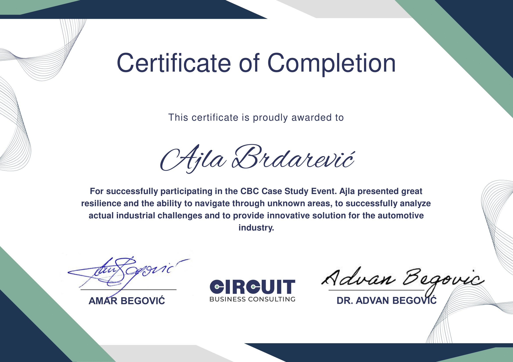

About Me
Technical Skills
Soft Skills
Academics
Working Experience
Extracurricular
Awards
Organizations
Hobbies
Career Aspirations
Web Development
- Frontend: HTML, CSS, JavaScript, React
-
Backend:
Node.js, Java Spring Boot
Mobile App Development- .NET MAUI, C#
Programming Languages- C++, C, C#, Python, JavaScript, Java
Database: - MySql, Mongo DB
Testing: - Manual, Automation in Selenium C#
Design: - Figma
Agile: - SCRUM, Sprint Design
Embedded Systems: - Arduino, C
Version control: - Git, GitHub
Project management:
- Jira, Trello, Asana, Notion
Analytical and Critical Thinking
- Proficient in dissecting complex problems, analyzing data, and deriving strategic insights to
drive informed decision-making
Active Learning Strategies
- Adept at adopting and implementing diverse learning approaches, ensuring continuous skill
enhancement and staying abreast of industry trends.
Creativity, Originality, Ideation, Innovation, and Initiative
- Demonstrates a flair for creative thinking, generating original ideas, and taking innovative
initiatives to bring fresh perspectivesto projects.
Adaptability and Flexibility
- Thrives in dynamic environments, showcasing the ability to adapt
swiftly to change, and maintaining flexibility to excel in diverse professional scenarios.
Completing my academic journey at the
Polytechnic Faculty, I immersed myself in a dynamic learning environment. The
collaborative
nature of group projects enhanced my ability to work effectively in teams. Grateful for the
solid
foundation and practical knowledge gained, the faculty has played a pivotal role in shaping my
academic
and professional growth.
In December 2023, I defended my bachelor's thesis on Smart Home system as part
of the Embedded
Systems course. The project involved automation using IoT and the Blynk IoT mobile application.
- Nauka govori - IT journalist
January 2024 - Present
I contribute part-time as a writer for the 'Nauka govori' portal, with a specific focus on the IT industry. The portal is committed to advancing science and education, promoting scientific literacy, and advocating for human rights and civil society. It strives to improve science journalism in Bosnia and Herzegovina and the surrounding region, alongside promoting extracurricular education for both youth and adults. Drawing on practical knowledge, creativity, and a passion for scientific inquiry, I produce articles aimed at informing, inspiring, and engaging readers in the ever-evolving landscape of technology and innovation.
- BH Telecom - internship
August 2023 - September 2023, Zenica
I had the opportunity to undertake internship for one month at BH Telecom in directorate Zenica,
working in the Department for Technical Support. During this internship, I worked in the
team of Office for Access Networks and Terminal Equipment and Communications Solutions
and Preparation Office, participating in optical cable testing, and even engaging in
fieldwork
Besides gaining various technical skills, this experience provided insights into how a large
corporation operates.
Circuit Business Consulting Case Study - Sarajevo, December 2023 (participant)
IT Girls Smart Automation Summer Camp - Sarajevo, September 2023 (participant)
IT Girls - III Cycle of the Mentoring Program - Online, December 2022 (mentee)
IT Girls - II Cycle of the Mentoring Program - Online, December 2021 (mentee)
EYP Academy - Sarajevo, May 2019 (PR Organizer)
EYP Member Training - Kakanj, April 2019 (CR Organizer)
EYP 29th Regional Session - Zenica, March 2019 (CR Organizer)
EYP B&H Members Weekend (NY’s Ball) - Zenica, December 2018 (CR Organizer)
Meet and Code - Zenica, October 2018 (participant)
EYP Alumni Training - Zenica, October 2018 (participant)
Understanding Europe: Training for Trainers - Sarajevo, October 2018 (participant)
City debating club "Agora": Public Debate - Sarajevo, July 2018 (participant)
EYP "EU Crash Course" Understanding Europe - Zenica, May 2018 (participant)
EYP National Session Basana - Zenica-Sarajevo, April 2018 (delegate)
EYP Regional Forum - Zenica, Februar 2018 (delegate)
EYP Regional Forum - Zenica, December 2017 (delegate)
Cyber Security Winter School
Issued by UNITED - udruženje za poticaj društvene odgovornosti · January 2024
Listening to experts from various segments of Cybersecurity, I have come to a better
understanding of how dynamic this field is and how much diversity contributes to its success.
However, it also reminded me of how, in today's world where we are all targets of various cyber
attacks, where AI and various technologies that are still being developed are being abused, each
of us must be our own Cyber expert.
Circuit Business Consulting Case Study
Issued by Circuit Business Consulting · December 2023
One-day workshop: Addressing Real-World Challenges for an Automotive Company
IT Girls Smart Automation Summer Camp
Issued by IT Girls Bosnia and Herzegovina · September 2023
Workshops: Artificial Intelligence, Arduino, Robots and Cobots, Project Management in Industry 5.0
IT Girls - III Cycle of the Mentoring Program
Issued by IT Girls Bosnia and Herzegovina · December 2022
Quality Assurance - Manual and Automation Testing
IT Girls - II Cycle of the Mentoring Program
Issued by IT Girls Bosnia and Herzegovina · December 2021
Basics of Python with Embedded Systems, Arduino
EYP Academy
Issued by European Youth Parliament · May 2019
I participated as organiser - Public Relations. The Academy 2019 featured modules on the
functioning of EYP, Head Organising and Corporate Relations, Outreach and inclusion and creation
of strategy. Also, it featured Annual Assembly of EYP Bosnia and Herzegovina 2019 which included
Presidential Elections for the 2019/20 term and changes to the rule book. I had a chance to work
on my social skills, communication and presenting skills. Also, it was my job to work on
designing promotional products for the first time.
EYP Member Training
Issued by Ruropean Youth Parliament · April 2019
Member training is event where we tried to expand office in Zenica and motivate young people to
work on their soft skills as the part of EYP in Bosnia and Hercegovina. Trainings were modified
for those who have not yet been in the role of an EYP Official. I participated as an organiser
on this event - Corporate Responsibility.
EYP 29th Regional Session
Issued by European Youth Parliament · March 2019
I participated as an organiser - Corporate Responsibility where I had a chance to improve my
communication skills, financial analysis, organisation skills and problem solving skills. My
role was to make sure we have sponsors and to promote to them the aim of our organisation to the
biggest bussines in our country. It was my honour that most of them recognised our potential and
thought about problems that we perceived.
EYP B&H Members Weekend (NY’s Ball)
Issued by European Youth Parliament · December 2018
I participated as an organizer (Corporate Responsibility). Members Weekend is an event that
brings together all members of our organization in Bosnia and Herzegovina, where current
problems are discussed, future events are planned and we work on our communication skills,
teamwork, public speaking and critical thinking.
Meet and Code
Issued by International Burch University, ASuBiH · October 2018
Coding weekend for high school students where we learned about the basics of Arduino and mobile
application development in Java
EYP Alumni Training
Issued by Erupean Youth Parliament · October 2018
I participated as treinee. The event was a one-day members event for EYP BiH members where
trainees were be able to participate and learn how to go through different roles within EYP.
Understanding Europe: Training for Trainers
Issued by European Youth Parliament, Understanding Europe · October 2018
I participated as trainee so that I could have the role of mentor/coach in the workshops.
City debating club "Agora": Public Debate
Issued by City debating club "Agora", Zenica · Jul 2018
I participated as a debater. Debate on the topic: Citizens of BiH who do not vote in elections
should pay fines. The debate was in Karl Popper format.
EYP "EU Crash Course" Understanding Europe
Issued by Understanding Europe, European Youth Parliament · May 2018
Understanding Europe is a project by the Schwarzkopf Foundation and the European Youth
Parliament in Bosnia and Herzegovina in cooperation with the Mercator Foundation. Through this
course we have aquired knowledge in international teamwork, languages, intercultural
communication and European politics.Understanding Europe is a project by the Schwarzkopf
Foundation and the European Youth Parliament in Bosnia and Herzegovina in cooperation with the
Mercator Foundation. Through this course we have aquired knowledge in international teamwork,
languages, intercultural communication and European politics.
EYP National Session Basana
Issued by European Youth Parliament · April 2018
I participated as delegate of the Committee on Culture and Education. We had to write motion for
a Resolution on the topic: With most mainstream schools in Bosnia and Herzegovina not yet being
ready to accept children with disabilities, what should the approach be to improving country's
special needs education?
EYP Regional Forum
Issued by European Youth Parliament · Februar 2018
I participated as delegate of the Committee on Legal Affairs. We hade to write motion for a
Resolution related to right to vote. Due to un-harmonised national legislation and laws between
Member States of the EU, the right to vote has been taken from the European citizens who moved
to their host countries. In six Member States generations of citizens are unable to vote in
either their host or native countries national elections.
EYP Regional Forum
Issued by European Youth Parliament · December 2017
I participated as delegate of the Committee on Economic and Monetary Affairs. We had to write
motion for a Resolution on the topic: How can the national authorities entice the people of this
country to stay and work for the improvement of the economy?

One of the standout experiences I must highlight is the Reconnect Hackathon, held in October 2022. It was an unforgettable event where my team, "Code of Duty," clinched the second place with the idea for the mobile app "Time for a Challenge". We leveraged our academic knowledge in software analysis and design while venturing into uncharted territories. The Reconnect Hackathon pushed us to explore new technologies, like Swift, for the first time.
Among the numerous organizations, European Youth Parliament captured my attention the most. I dedicated most of my time to EYP, in return, I learned many soft skills, improved my English language, and had the opportunity to meet a diverse individuals. As a delegate, organizer, and regional coordinator, I learned to work within a group, while also independently shouldering responsibility for significant matters. From handling bureaucratic issues to event organization and project writing, to engaging in political discussions, this organization has undeniably had a profound impact on my personal and professional development.
Besides technology, another constant in my life has been art. I attended both a music school and ballet school. I play the violin, piano, and guitar, and I used to dance ballet. Moscow International Festival of Slavic Music is the moment I hold dear and always cherish, because I was awarded a special prize.
As a programming 'polyglot,' I've expanded my language talents beyond code to human languages. Learning new languages has become a quirky hobby, enhancing my Netflix experience and adding a touch of wanderlust. Recently, I've taken up sewing, merging creativity with environmental consciousness in sustainable fashion. My diverse interests include crossword puzzles, quizzes, a passion for Formula 1, and a dedication to films, series, books, and music.
Currently, I am open to exploring a wide range of career opportunities within the field of
software engineering. I embrace the idea of versatility and am not hesitant to venture into
any
career path that aligns with my passion and expertise. I firmly believe that every
opportunity,
regardless of its specific focus, has the potential to be a stepping stone in my journey. My
plan
for the future is to pursue a master's degree in software engineering, allowing me to
complete the
bigger picture.
Along the way, I aim to gain valuable work experience to further develop my technical
skills,
and to explore different facets of the industry to find the path I'd like to commit to in
the long
run. While my studies have exposed me to a broad spectrum of topics, a few areas have
particularly
piqued my interest: Embedded systems and the Internet of Things (IoT) and I've delved into
diverse
back-end development techniques for various types of applications. While I'm increasingly
drawn to AI, I
acknowledge that I may not yet possess the depth of knowledge and experience required to
prioritize it as my sole focus.
Moreover, I've always been drawn to the idea of blending my technical expertise with skills
I've acquired over time and excel in naturally. Collaborating within a team dynamic and
assuming leadership roles is one such skill set. Hence, I've chosen this career path,
allowing me to integrate my evolving technical skills with my passion for exploring business
strategies
and life cycle of developing a certain product.